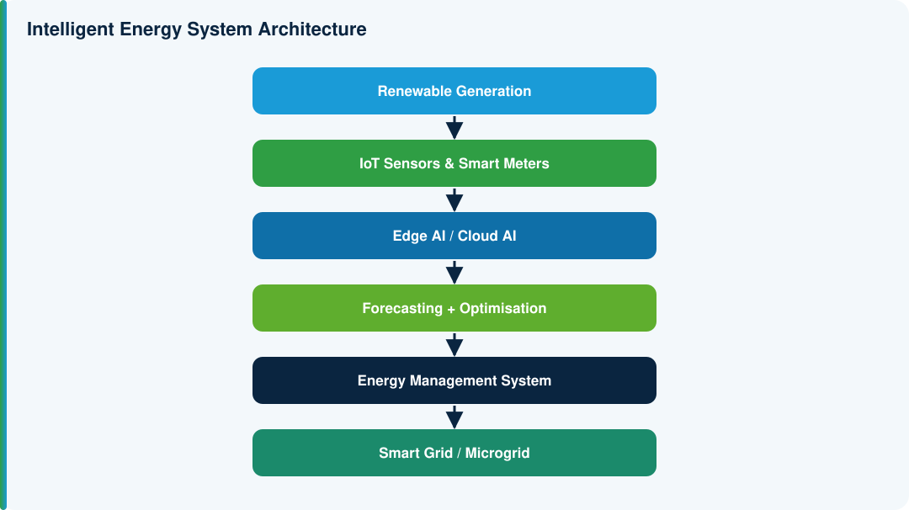
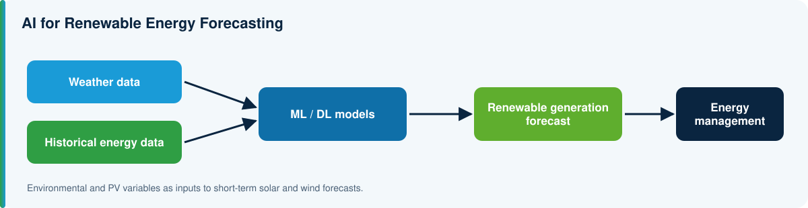
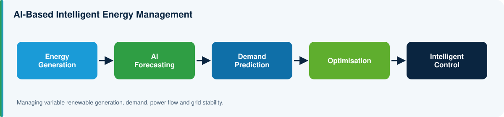
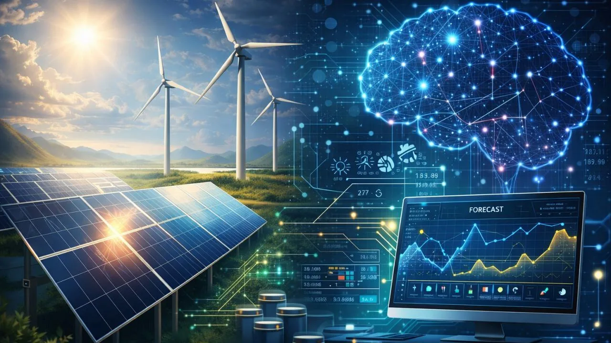

System architecture
From renewable generation through sensing, edge and cloud AI to the energy management system.
Learn moreIESST Lab at ICRI-STE
We build AI that predicts renewable generation and demand, manages storage, and runs renewable-powered microgrids on its own.
Five connected programmes that together form one intelligent energy platform.

From renewable generation through sensing, edge and cloud AI to the energy management system.
Learn more
Weather and historical data feed ML/DL models that forecast solar and wind output.
Learn more
Solar, wind, battery, grid and loads coordinated by one intelligent controller.
Learn more
Test strategies on a virtual copy before they touch the physical system.
Learn more
Forecasts and demand predictions drive optimisation and control.
Learn moreAI-Enabled Intelligent Renewable Energy and Smart Microgrid Systems for Sustainable Energy Management
Project overview
Today: generate, distribute, consume.
Forecast generation, demand and battery state.
Sense, predict, optimise, control, learn and adapt in real time.